Family Worship Center
Three bold, contemporary directions for a custom church experience — every one engineered to live on Wix.
A contemporary, welcoming home for Greater Emmanuel — exciting enough to turn heads, warm enough to feel like family. We pulled real voice and content from the current site, then pushed three distinct visual systems.
A bold, dark editorial system. Oversized condensed type, electric coral, and full-bleed worship imagery give the brand magazine-grade confidence — modern, cinematic, unmistakably alive.
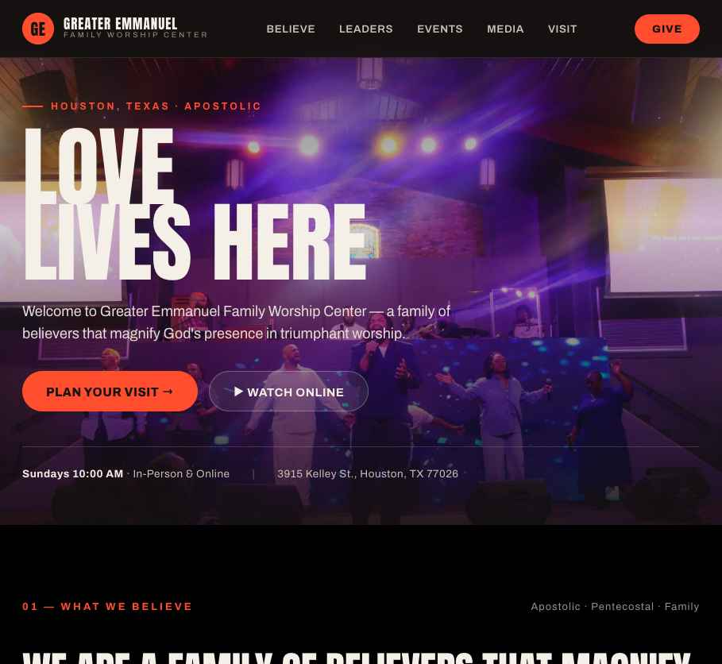
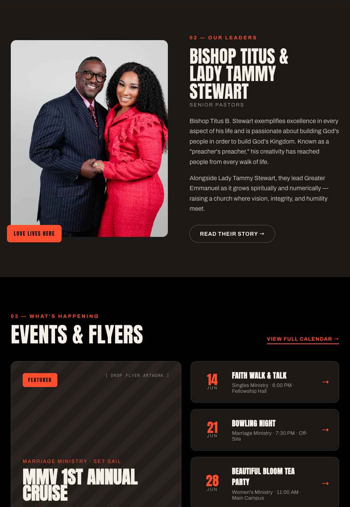
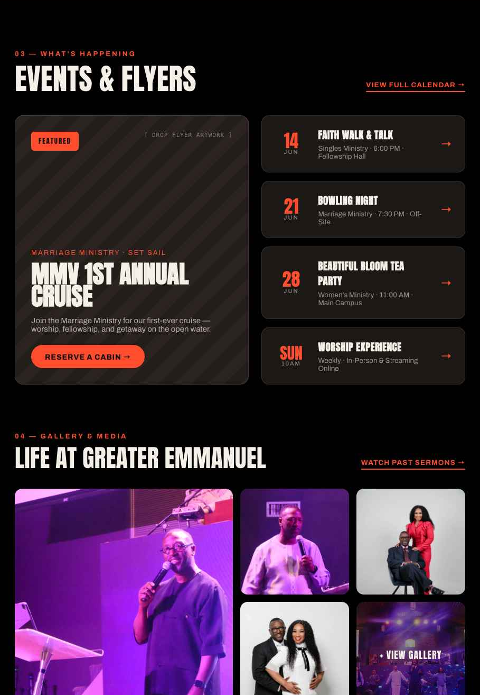
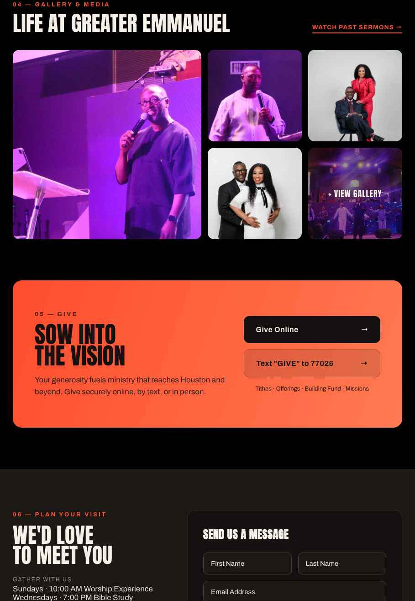
A retro print-poster system inspired by concept broadsides — burnt orange, cream and teal, duotone photography, monospace metadata, registration marks and paper grain. The boldest, most collectible take.
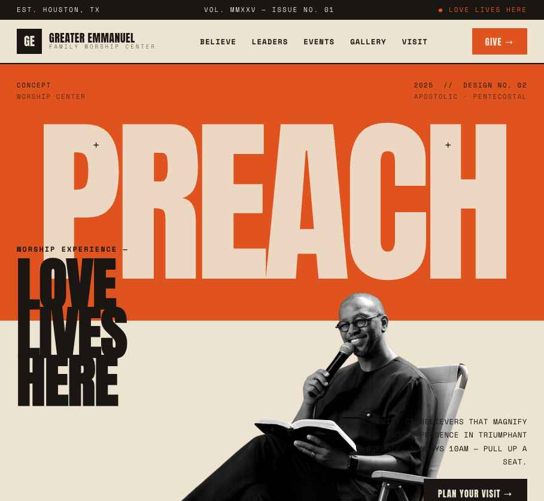
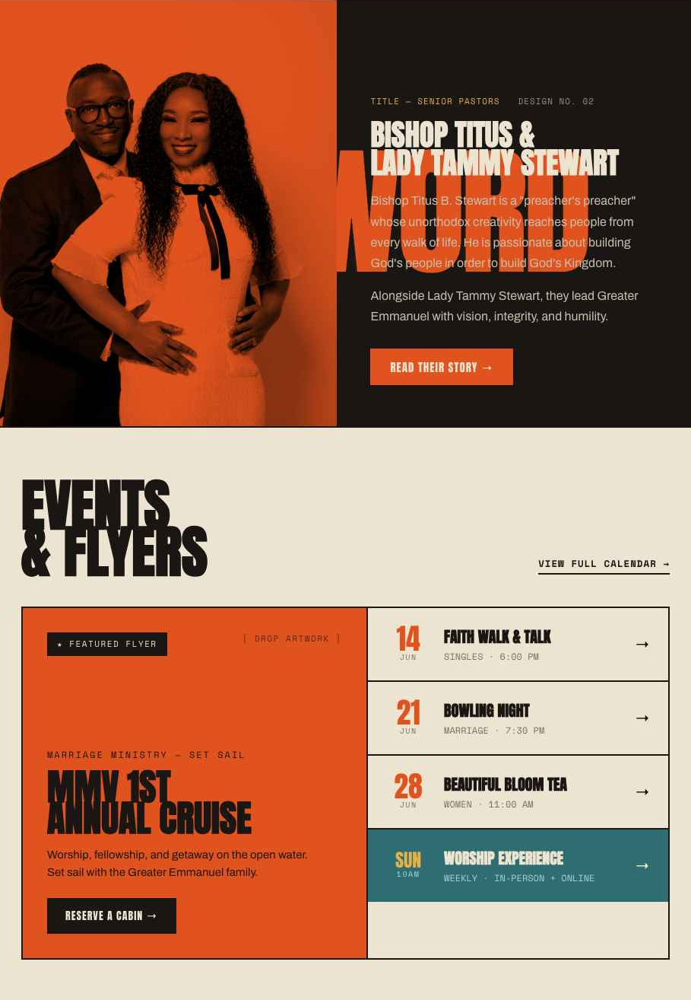
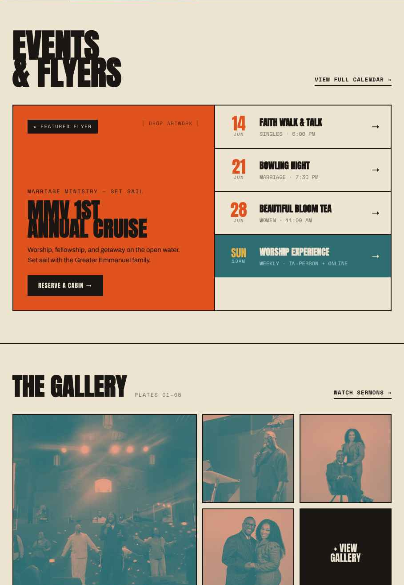
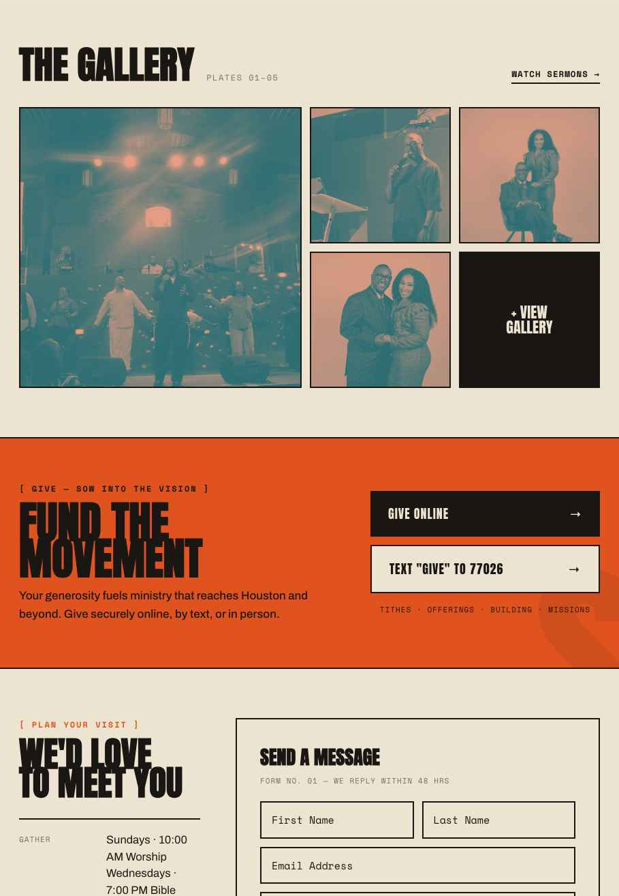
Edgy, after-hours concert energy. Electric violet and acid lime, neon glow, a scrolling marquee and gradient event flyers. Youth-forward and built to make streaming services feel like a moment.
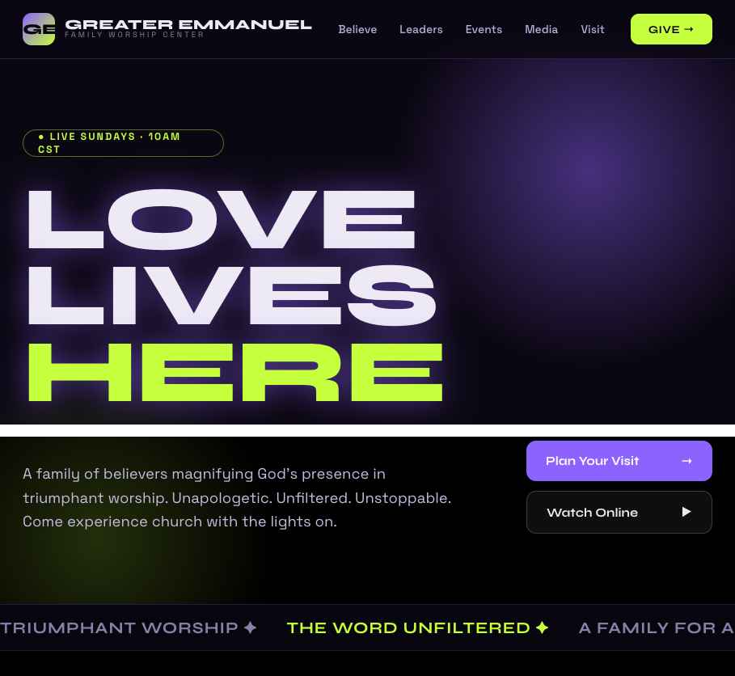
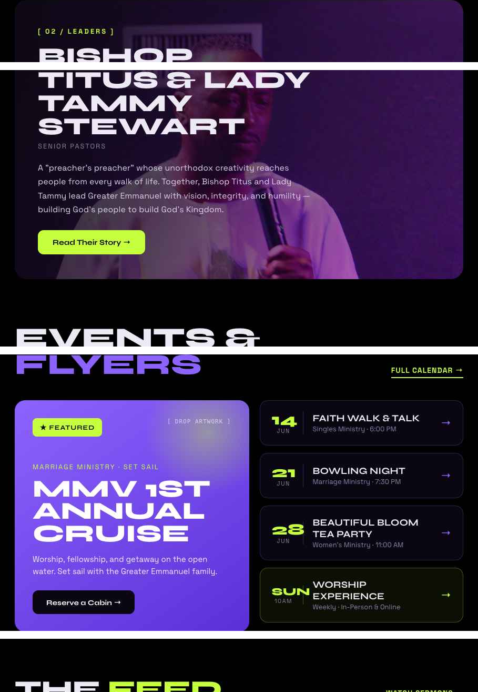
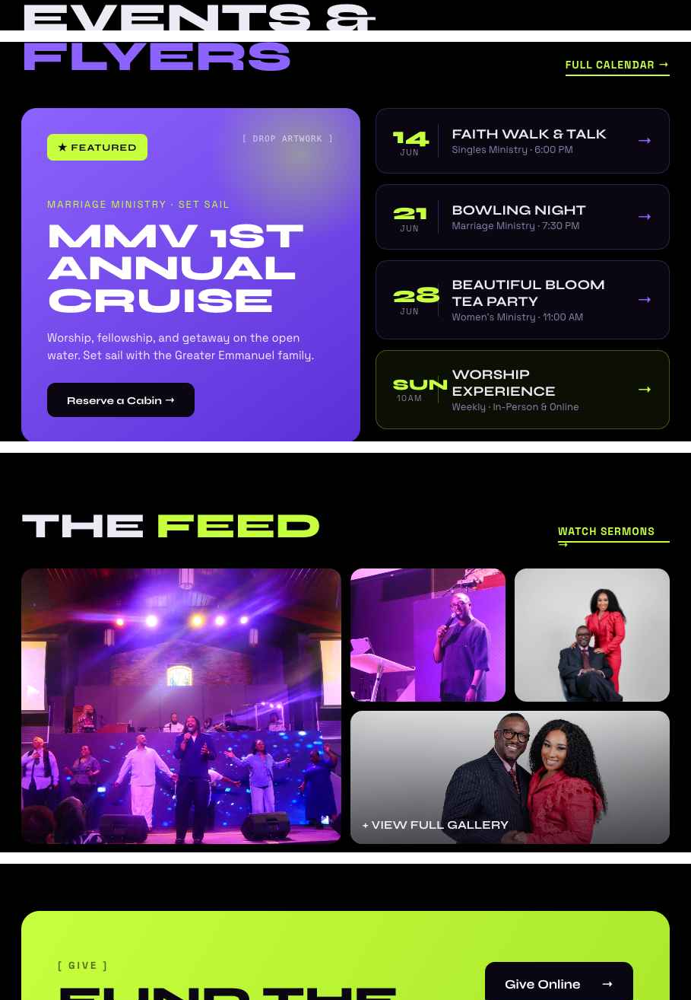
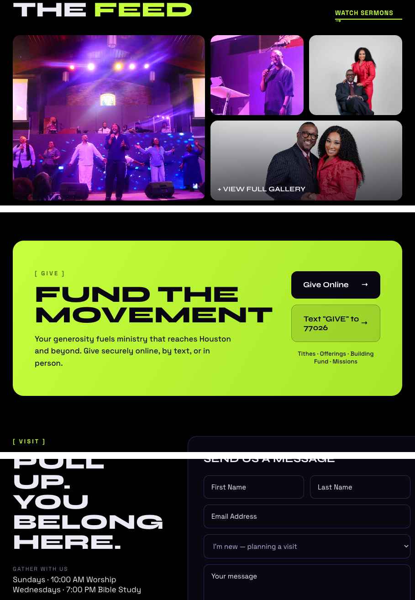
Each direction is a complete design system — not a one-off homepage. The same type, color and grid roll out to every new page you add in Wix. Here's the Triumph theme as a future Blog & News page.
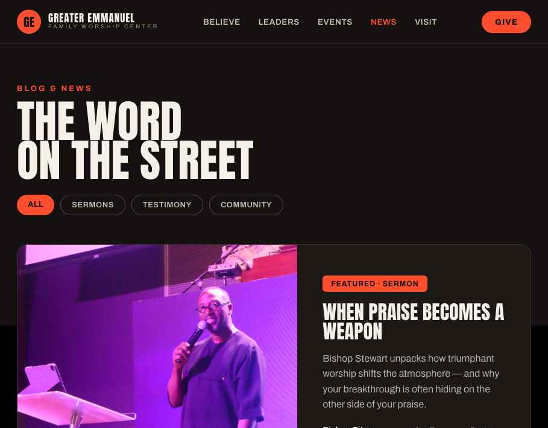
Bold dark editorial. Confident & cinematic.
Retro print poster. Loud & collectible.
Edgy concert energy. Youth-forward.